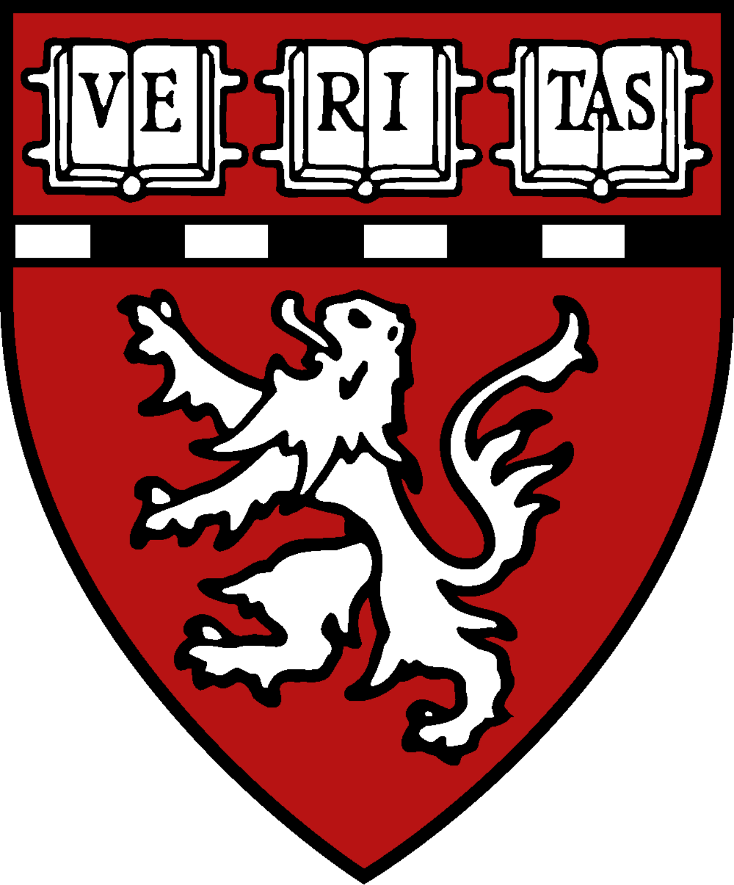
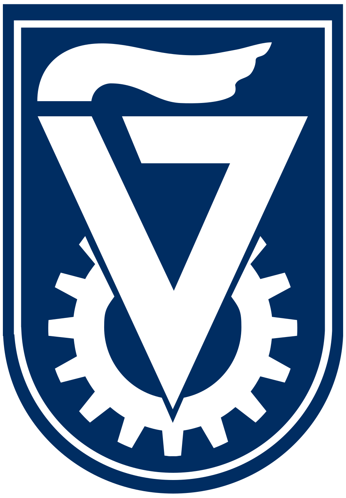
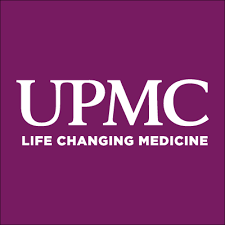

Hi! I'm Aya
Physician-scientist, Fulbright scholar, former research fellow at Harvard/MGH,
and incoming Internal Medicine resident at UPMC.
About
I am a physician-scientist interested in how clinical research, data, and
health systems design can improve patient outcomes. After medical school, I
realized I was drawn to a career integrating patient care with research —
combining the individual impact of medicine with broader systems-level change.
My work at Harvard and MGH has focused on disease biomarkers and
cardiovascular morbidity in chronic conditions, particularly chronic kidney
disease and HIV. Using large clinical datasets and translational cohorts, I
have studied cardiometabolic risk, disease mechanisms, and how clinical
guidelines translate into real-world decision making and workflows. This work
has been published in JAMA Network Open, JAHA, and
The Lancet HIV.
As a Fulbright scholar, I trained in interdisciplinary and internationally
collaborative environments. More recently, my work on AI and prediction models
— and their limitations in fairness, implementation, and clinical adoption —
has drawn me toward implementation science, clinical informatics, and clinical
decision support.
Education

Harvard Medical School
Master of Medical Sciences in Clinical Investigation
2022 - 2024
Thesis-based Master of Medical Sciences in Clinical Investigation at Harvard
Medical School focused on clinical epidemiology, biostatistics, and
translational research methods. Graduate training was fully funded through the
Fulbright Scholarship. Awarded the Gordon Williams Gold Medal for Research
Excellence in recognition of outstanding achievement in clinical investigation
and translational research. Thesis work centered on cardiovascular risk,
biomarkers, and clinical outcomes using large-scale cohort data.

Technion Institute of Technology
Doctor of Medicine (Summa Cum Laude)
2017 - 2022
Doctor of Medicine (MD), summa cum laude, from the Technion – Israel Institute
of Technology. Medical training was grounded in broad, high-volume clinical
exposure across inpatient and outpatient medicine, with early interests in
cardiovascular disease, complex chronic illness, and evidence-based clinical
decision making. Completed a clinical externship in Infectious Diseases at
Rhode Island Hospital in Providence, Rhode Island.
Technion Institute of Technology
Bachelor of Science in Medical Sciences (Summa Cum Laude)
2014 - 2017
Bachelor of Science in Medical Sciences (summa cum laude),
with foundational training in biomedical sciences,
human physiology, and evidence-based medicine.
Employment History

University of Pittsburgh Medical Center (UPMC)
Internal Medicine Resident Physician
2026 - Present
Incoming Internal Medicine resident in the International-Scholar/Clinician-Scientist Track at
UPMC, with interests in cardiovascular medicine, clinical informatics and
implementation science.
Massachusetts General Hospital / Harvard Medical School
Research Fellow, Metabolism Unit
2024 - 2026
Conducted clinical and translational research focused on cardiovascular
morbidity, disease biomarkers, and cardiometabolic risk in populations living
with chronic conditions, particularly HIV and chronic kidney disease.
Trained under the mentorship of
Steven Grinspoon, MD
,
internationally recognized clinical trialist, Chief of the MGH Metabolism
Unit, and chair of the NIH-funded REPRIEVE trial — the first large-scale
randomized trial studying statin therapy for primary cardiovascular prevention
in people living with HIV. Also trained at the Center for Biostatistics in
AIDS Research (CBAR) at the Harvard T.H. Chan School of Public Health, with
work spanning large-scale cohort analyses, predictive modeling, and studies
examining implementation of clinical guidelines and decision support tools.
Massachusetts General Hospital / Harvard Medical School
Graduate Student Researcher, Kidney Lab
2022 - 2024
Conducted thesis-based research under the mentorship of
Sahir Kalim, MD, MMSc
,
focused on carbamylation in chronic kidney disease and its implications
for cardiovascular morbidity and disease progression. Thesis work,
“Carbamylation in Chronic Kidney Disease: Comparative Biomarker Analysis
and Implications for Cardiovascular Disease,” examined carbamylated
proteins as emerging biomarkers of metabolic stress, inflammation, and
cardiovascular risk in CKD using translational cohort data.
Rambam Health Care Campus
Medical Intern & General Physician
2021 - 2022
Completed rotating medical internship and worked as a general physician in
one of Israel’s largest tertiary academic hospitals, with broad clinical
exposure across inpatient and outpatient medicine, acute care, and
multidisciplinary clinical teams.
Skills
R
Python
SQL
Machine Learning
Clinical Research
Epidemiology
Biostatistics
Survival Analysis
PheWAS
BigQuery
Shiny
ggplot2
Data Visualization
Clinical Informatics
Cardiometabolic Research
AI in Healthcare